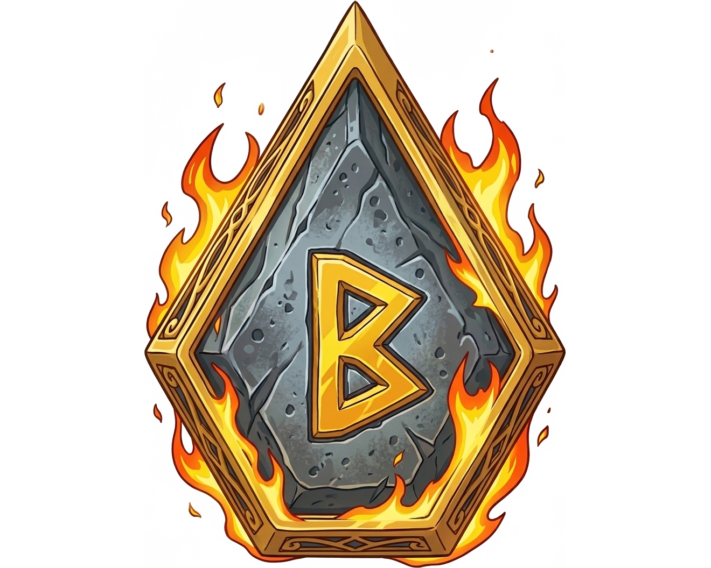

—
Account progression suggestion
Early, Mid, and Late change how strict the rules are. The combined score estimates account depth from your full rune export (Rare and above): fast runes, upgraded runes, and quality on your best pieces. It ignores the preset below and the dashboard minimum level filter.
—
—
—
—
—
—
—
—
Share roster
| Location | Set | Main | Innate | Sub 1 | Sub 2 | Sub 3 | Sub 4 | Ingame | Forge | Verdict | Role | Action |
|---|
Share roster
Share roster
| Category | Lvl | Durability | Main | Secondary | Equipped |
|---|
| Grade | Category | Main | Subs | Ingame | Forge | Role | Verdict | Location |
|---|
Suggest when a rune has bad flat substats that are worth replacing.
Recommend Grind when a key stat is close to the Late-game High Roll line for the rune grade.
Which runes are worth reappraising (Reapp).
Define what “fits” each role. Most users should not change this.
Basic filters
Rune filters
Share roster
One SWEX JSON powers the whole app — Runes for cleanup and Monsters for your box. Everything stays in your browser; nothing is uploaded.
Your monster box
Search by name, element, or rune text. Open a unit to see Base, +runes, and Total stats — Total SPD includes your account Sky Tribe Totem bonus (% of base, from the export). Six rune slots link to the Rune Table.
Lineups (optional)
Build teams from the same export. Each slot shows combat SPD (base + runes + totem and leader % of base). Crown = leader. Modern SWEX stores totem level in wizard_skill_list (skill_id: 14). Sample demo teams disappear after you load your own file.
In App Settings → Database Slots you can store alt accounts or before/after exports — Share is in the card header. Swap changes which file the Dashboard and Rune Table use. Language: globe icon in the header.
Clear all saved data on the upload card wipes runes, rules tweaks, and all four slots from this browser — use only when you want a full fresh start.
Un JSON SWEX alimente toute l’app — Runes pour le tri et Monstres pour votre boîte. Tout reste dans le navigateur ; rien n’est envoyé.
Votre boîte de monstres
Recherchez par nom, élément ou texte de rune. Ouvrez une unité pour voir les stats Base, +runes et Total — la VIT totale inclut le bonus Monument Sky Tribe (% de la base, depuis l’export). Six emplacements runes mènent à la table des runes.
Équipes (optionnel)
Composez des équipes depuis le même export. Chaque slot affiche la VIT de combat (base + runes + totem et leader % de la base). Couronne = leader. Les SWEX récents stockent le totem dans wizard_skill_list (skill_id: 14). Les équipes démo disparaissent après votre propre import.
Dans Paramètres de l’app → Emplacements base, stockez d’autres comptes ou exports avant/après — Partager est dans l’en-tête de la carte. Changer modifie le fichier actif pour le tableau de bord et la table des runes. Langue : icône globe dans l’en-tête.
Effacer toutes les données sur la carte d’import efface runes, réglages et les quatre emplacements dans ce navigateur — à utiliser seulement pour repartir de zéro.
Один JSON из SWEX питает всё приложение — вкладка Руны для разбора рун и Монстры для коробки. Всё в браузере, без загрузки на сервер.
Коробка монстров
Поиск по имени, стихии, рунам. В карточке — Base, +runes, Total; Total SPD учитывает бонус Sky Tribe Totem (% от базы из экспорта). Шесть слотов рун → клик открывает руну в таблице.
Составы (по желанию)
Сборка из того же SWEX. На слоте — боевая скорость (база + руны + % тотема и лидера от базы). Корона = лидер. В новых JSON уровень тотема в wizard_skill_list (skill_id: 14). Демо-составы пропадают после загрузки своего файла.
В Настройки приложения → Слоты баз данных — альт или «до/после» фарма, кнопка Share в заголовке карточки. Swap переключает активный экспорт. Язык — иконка глобуса в шапке.
Удалить все сохранения на карточке загрузки стирает руны, правки правил и все четыре слота в этом браузере — только если нужен полный старт с нуля.
Two layers: how deep your whole box is (top) vs what to do with runes right now (cards, charts, filters below).
Account progression
Always counts every Rare+ rune in the active export. Ignores Min level and grade filters below. Suggests Early / Mid / Late from your box depth — Apply suggestion copies that to your preset.
Filtered view
Min level and grade range shrink verdict tiles, charts, and what opens when you click a bar. Changing Early / Mid / Late or Strictness recalculates all rune verdicts.
A fine dial on top of Early / Mid / Late. Same export — different mood: “I am still building” vs “I only want RTA-ready pieces.”
What moves with the slider: how many useful substats you need, how high rolls must be, how hard God/Duo/Universal bars are, and whether a “soft retry” runs at all.
Click a verdict slice, number tile, or role row — the Rune Table opens with the same filter. Enter or Space on a chart row works too (keyboard). Five chart tabs answer “where are my runes?” without leaving the Dashboard.
Copy summary (next to filters) pastes a text snapshot for Discord or notes — preset, depth score, filters, verdict counts, slot totals.
Deux niveaux : la profondeur de toute votre boîte (en haut) contre quoi faire avec les runes maintenant (cartes, graphiques, filtres en dessous).
Progression du compte
Compte toujours chaque rune Rare+ de l’export actif. Ignore le niveau min et les filtres de grade ci-dessous. Propose Début / Milieu / Fin selon la profondeur de la boîte — Appliquer la suggestion copie cela dans votre préréglage.
Vue filtrée
Niveau min et plage de grades réduisent les tuiles de verdict, les graphiques et ce qui s’ouvre au clic. Changer Début / Milieu / Fin ou Sévérité recalcule tous les verdicts.
Réglage fin par-dessus Début / Milieu / Fin. Même export — autre état d’esprit : « je construis encore ma boîte » ou « je ne veux que des pièces prêtes pour la RTA ».
Ce que déplace le curseur : nombre de sous-stats utiles, hauteur des rolls, barres God/Duo/Universal, et si une « seconde chance » s’applique.
Cliquez sur une tranche de verdict, une tuile ou une ligne de rôle — la table des runes s’ouvre avec le même filtre. Entrée ou Espace sur une ligne de graphique fonctionne aussi (clavier). Cinq onglets répondent à « où sont mes runes ? » sans quitter le tableau de bord.
Copier le résumé (à côté des filtres) colle un instantané texte pour Discord ou vos notes — préréglage, score de profondeur, filtres, comptes de verdicts, totaux par emplacement.
Два слоя: глубина всей коробки (сверху) и что делать с рунами сейчас (карточки, графики, фильтры ниже).
Прогресс аккаунта
Всегда считает все Rare+ активного экспорта. Не смотрит на мин. уровень и фильтр грейдов ниже. Предлагает Early / Mid / Late по глубине коробки — Применить совет копирует это в пресет.
Отфильтрованный вид
Мин ур и диапазон грейдов сужают плитки вердиктов и графики. Смена Early / Mid / Late или Strictness пересчитывает вердикты всех рун.
Тонкая настройка поверх Early / Mid / Late. Тот же экспорт — другое настроение: «ещё качаю коробку» или «хочу только сильные руны».
Что двигает слайдер: число полезных сабов, высота роллов, пороги God/Duo/Universal и включена ли мягкая вторая проверка.
Клик по вердикту, плитке или роли открывает таблицу с фильтром. На строке графика работают Enter и Пробел.
Копировать сводку рядом с фильтрами — текст для Discord/заметок: пресет, балл глубины, фильтры, вердикты.
One number (0–100) for how stacked your account is — speed runes, +15 six-stars, top-end efficiency, and built monsters. Not RTA rank.
Four independent bars add up to 100 points max. Your counts are shown on the dashboard cards; underneath you see how many points each part contributed.
A small box can still show a decent score if those 50 top runes are insane — but speed/power/roster counts expose a shallow inventory. You cannot "fake" 250 SPD runes with only a handful of units.
Apply suggestion only copies the preset — per-rune verdicts change when you pick Early / Mid / Late yourself.
Un chiffre (0–100) pour à quel point votre compte est fourni — runes vite, 6★ +15, efficacité haut de gamme, et monstres construits. Pas le rang RTA.
Quatre barres indépendantes totalisent 100 points max. Vos comptes sont sur les cartes du tableau de bord ; en dessous, la contribution de chaque partie.
Une petite boîte peut avoir un bon score si ces 50 runes sont folles — mais les compteurs vitesse/puissance/effectif révèlent un inventaire peu profond. On ne peut pas « tricher » 250 runes SPD avec quelques unités.
Appliquer la suggestion ne copie que le préréglage — les verdicts par rune changent quand vous choisissez vous-même Début / Milieu / Fin.
Один балл (0–100): насколько прокачан аккаунт — спд-руны, +15 шестизвёздочные, элитная eff и построенные монстры. Не ранг арены.
Четыре независимые полоски дают максимум 100. На карточках панели — ваши числа; ниже видно вклад каждой части в баллы.
Маленькая коробка может иметь высокую «элиту», если топ-50 рун идеальны — но мало спд-рун, +15 и построенных монстров это покажут. 250 быстрых рун «нарисовать» нельзя.
Применить совет только копирует пресет — вердикты по рунам меняются, когда вы сами выберете Early / Mid / Late.
Your action list: every rune with stats, Ingame and Forge ratings, Verdict, Role, and Location. Hover Verdict for the plain-language reason (Keep quality, Grind/Gem hints, why Sell).
The table shows two independent numbers. They answer different questions — use both, do not expect them to match.
Com2uS in-game Rating — same idea as the rune list inside Summoners War.
From SWEX prefix_eff (innate, base value only) and sec_eff lines (base + grind). Main stat is not scored (treated as perfect at +15). Duplicate innate lines on subs are skipped.
Per line: raw points from stat type and total value (flats HP/ATK/DEF use ÷3 in the game formula).
Ingame = round( Σ raw line points ) — sum first, round once (not per-line rounding).
Hover the number for a line-by-line breakdown.
Sorting by Ingame: slots 1 → 6, then score high → low within each slot (like the in-game rune inventory). Default table sort is still Forge ↓.
Our 0–100 stat-value rating — tiers, synergies, grind in subs — not Eff% and not verdict.
raw = (mainPts + subPts + innatePts) × mainSubSyn × subSubSyn × dupSub × archetypeMul
Score = round( min(100, raw ÷ 295 × 100) )
Sub values use roll + grind (subRuneValue). Roll quality = value ÷ max (capped at 1.12). Calibration constant 295 maps typical runes (~55–75 raw) onto 0–100.
Each main: mainPts = tier × rollQuality. Roll quality uses slot main max (e.g. DEF flat slot 3 max 160, HP flat slot 1 max 2448, CDmg slot 4 max 80, SPD slot 2 max 42).
On slots 1 / 3 / 5 (flat-main slots), HP / ATK / DEF mains use tier 72 — a normal main for that slot, not a weak off-stat pick.
% mains on slots 2 / 4 / 6 use the tier table below.
| Main stat | Tier | Notes |
|---|---|---|
| HP / ATK / DEF on slots 1, 3, 5 | 72 | Flat-slot mains |
| SPD | 100 | % slots |
| CDmg | 93 | % slots |
| ATK% | 91 | % slots |
| CRate | 89 | % slots (2026 meta — slot 4 bruisers) |
| ACC | 80 | % slots |
| HP% | 76 | % slots |
| DEF% | 73 | % slots |
| RES | 71 | % slots |
Each sub: subPts = tier × rollQuality × slotMul. On slots 2 / 4 / 6, flat HP / ATK / DEF subs: slotMul = 0.88 (else 1). Unknown stat: tier 45 (main fallback 50).
| Sub stat | Tier |
|---|---|
| SPD | 100 |
| CRate | 95 |
| CDmg | 93 |
| ATK% | 90 |
| ACC | 84 |
| HP% | 78 |
| DEF% | 74 |
| RES | 72 |
| ATK | 62 |
| DEF | 60 |
| HP | 58 |
Innate (prefix): same sub tiers × roll quality × 0.38 (INNATE_WEIGHT_VS_SUB). Counts in synergy averages; not summed as a full sub line.
Main ↔ sub — average over all subs (innate excluded). Most pairs are unordered; ATK%↔SPD depends on direction (ATK% main + SPD sub = ×1.11, SPD main + ATK% sub = ×1.10).
Listed main ↔ sub bonuses (both slot groups)
| Main + sub | × |
|---|---|
| ATK% + CDmg | 1.13 |
| CDmg + CRate | 1.12 |
| HP% + DEF% | 1.11 |
| SPD + ACC · ATK% + CRate · DEF% + HP% | 1.10 |
| ATK% + ATK flat · DEF% + DEF flat · HP% + HP flat | 1.10 |
| HP% + RES · RES + HP% | 1.10 |
| DEF% + RES | 1.09 |
| ATK% main + SPD sub | 1.11 |
| SPD main + ATK% sub | 1.10 |
| HP% + SPD | 1.04 |
| ATK% + RES | 0.90 |
| ATK% + DEF% | 0.91 |
| CDmg + RES | 0.94 |
Sub ↔ sub — average over all sub pairs; unlisted → 1.00.
| Sub + sub | × |
|---|---|
| CRate + CDmg | 1.12 |
| ATK% + CDmg | 1.10 |
| SPD + ACC | 1.09 |
| ATK% + SPD | 1.09 |
| ATK% + CRate | 1.08 |
| HP% + DEF% | 1.08 |
| SPD + CDmg | 1.07 |
| HP% + RES · DEF% + RES | 1.07 / 1.06 |
| ATK% + RES | 0.93 |
| CDmg + RES | 0.94 |
Cross-stat duplicate (dupSub): ×0.88 per overlap of the same base type across zones (ATK + ATK% count as one type). Overlaps: main↔any sub · main↔innate · innate↔any sub. Formula: dupSub = 0.88^(overlaps) or 1.00 if none. (Two SPD subs on one rune is impossible in-game.)
Golden triplet (archetypeMul): if main + subs + qualifying innate (innate roll quality > 50%) contain any 3 stats from one archetype → ×1.04 once: Nuker (ATK/ATK%, CRate, CDmg) · Fast Tank (HP/HP%, DEF/DEF%, SPD) · Control (SPD, ACC, HP/HP%) · Bruiser (HP/HP%, CRate, CDmg).
Hover Forge for live breakdown (pts + all multipliers, including archetype name when ×1.04). Chip color: ≥88 high · ≥72 mid · below low.
SWOP Eff% is still computed for account progression (Depth elite bar) and dashboard efficiency charts — it is not a table column anymore.
Huge exports: first 500 rows for speed — Load all … for the full filtered list. Search highlights matches in the row.
Export CSV — filtered list with Forge, Ingame, Role, Verdict, and a Reason text column (same text as the Verdict tooltip). Share (toolbar) — read-only link for monsters/runes (see App Settings for modes).
Filters update the URL to #runetable?… — bookmark or send the link to reopen the same view in this browser.
Votre liste d’actions : chaque rune avec stats, notes Ingame et Forge, Verdict, Rôle et Emplacement. Survolez Verdict pour la raison (qualité Garder, indices Grind/Gemme, pourquoi Vendre).
Le tableau affiche deux chiffres indépendants. Ils répondent à des questions différentes — utilisez les deux, ne vous attendez pas à ce qu’ils coïncident.
Rating Com2uS en jeu — même idée que la liste des runes dans Summoners War.
Depuis SWEX prefix_eff (innate, valeur de base seule) et lignes sec_eff (base + grind). Le main n’est pas noté (traité comme parfait à +15). Les doublons innate sur les sous-stats sont ignorés.
Par ligne : points bruts selon le type et la valeur totale (plats HP/ATK/DEF avec ÷3 comme en jeu).
Ingame = round( Σ points bruts ) — somme d’abord, arrondi une fois (pas par ligne).
Survolez le nombre pour le détail ligne par ligne.
Tri par Ingame : emplacements 1 → 6, puis score décroissant dans chaque emplacement (comme l’inventaire runes en jeu). Tri par défaut : Forge ↓.
Notre note 0–100 sur la valeur des stats — paliers, synergies, grind dans les sous-stats — pas l’Eff% ni le verdict.
raw = (mainPts + subPts + innatePts) × mainSubSyn × subSubSyn × dupSub × archetypeMul
Score = round( min(100, raw ÷ 295 × 100) )
Les sous-stats utilisent roll + grind (subRuneValue). Qualité du roll = valeur ÷ max (plafond 1,12). Constante 295 pour mapper les runes typiques (~55–75 bruts) sur 0–100.
Chaque main : mainPts = tier × rollQuality. La qualité du roll utilise le max main du slot (ex. DEF plat slot 3 max 160, HP plat slot 1 max 2448, CDmg slot 4 max 80, SPD slot 2 max 42).
Sur les slots 1 / 3 / 5 (mains plats), les mains HP / ATK / DEF utilisent le palier 72 — un main normal pour ce slot, pas un mauvais choix off-stat.
Les mains % sur les slots 2 / 4 / 6 utilisent le tableau ci-dessous.
| Stat principal | Palier | Notes |
|---|---|---|
| HP / ATK / DEF sur slots 1, 3, 5 | 72 | Mains slots plats |
| SPD | 100 | Slots % |
| CDmg | 93 | Slots % |
| ATK% | 91 | Slots % |
| CRate | 89 | Slots % (méta 2026 — bruisers slot 4) |
| ACC | 80 | Slots % |
| HP% | 76 | Slots % |
| DEF% | 73 | Slots % |
| RES | 71 | Slots % |
Chaque sous-stat : subPts = tier × rollQuality × slotMul. Sur slots 2 / 4 / 6, sous-stats plats HP / ATK / DEF : slotMul = 0.88 (sinon 1). Stat inconnu : palier 45 (repli main 50).
| Sous-stat | Palier |
|---|---|
| SPD | 100 |
| CRate | 95 |
| CDmg | 93 |
| ATK% | 90 |
| ACC | 84 |
| HP% | 78 |
| DEF% | 74 |
| RES | 72 |
| ATK | 62 |
| DEF | 60 |
| HP | 58 |
Innate (prefix) : mêmes paliers sous-stats × qualité du roll × 0,38 (INNATE_WEIGHT_VS_SUB). Compte dans les moyennes de synergie ; pas additionné comme une ligne sous-stat complète.
Main ↔ sous-stat — moyenne sur toutes les sous-stats (innate exclu). La plupart des paires sont sans ordre ; ATK%↔SPD dépend du sens (main ATK% + sous-stat SPD = ×1,11, main SPD + sous-stat ATK% = ×1,10).
Bonus main ↔ sous-stat listés (les deux groupes de slots)
| Main + sous-stat | × |
|---|---|
| ATK% + CDmg | 1.13 |
| CDmg + CRate | 1.12 |
| HP% + DEF% | 1.11 |
| SPD + ACC · ATK% + CRate · DEF% + HP% | 1.10 |
| ATK% + ATK flat · DEF% + DEF flat · HP% + HP flat | 1.10 |
| HP% + RES · RES + HP% | 1.10 |
| DEF% + RES | 1.09 |
| ATK% main + SPD sub | 1.11 |
| SPD main + ATK% sub | 1.10 |
| HP% + SPD | 1.04 |
| ATK% + RES | 0.90 |
| ATK% + DEF% | 0.91 |
| CDmg + RES | 0.94 |
Sous-stat ↔ sous-stat — moyenne sur toutes les paires ; non listé → 1,00.
| Sous-stat + sous-stat | × |
|---|---|
| CRate + CDmg | 1.12 |
| ATK% + CDmg | 1.10 |
| SPD + ACC | 1.09 |
| ATK% + SPD | 1.09 |
| ATK% + CRate | 1.08 |
| HP% + DEF% | 1.08 |
| SPD + CDmg | 1.07 |
| HP% + RES · DEF% + RES | 1.07 / 1.06 |
| ATK% + RES | 0.93 |
| CDmg + RES | 0.94 |
Doublon cross-stat (dupSub) : ×0,88 par chevauchement du même type de base entre zones (ATK + ATK% = un type). Zones : main↔sous-stat · main↔innate · innate↔sous-stat. Formule : dupSub = 0,88^(chevauchements) ou 1,00 si aucun. (Deux sous-stats SPD sur une rune est impossible en jeu.)
Triplet doré (archetypeMul) : si main + sous-stats + innate qualifiant (qualité du roll innate > 50 %) contiennent 3 stats d’un archétype → ×1,04 une fois : Nuker (ATK/ATK%, CRate, CDmg) · Fast Tank (HP/HP%, DEF/DEF%, SPD) · Control (SPD, ACC, HP/HP%) · Bruiser (HP/HP%, CRate, CDmg).
Survolez Forge pour le détail live (pts + multiplicateurs, archétype si ×1,04). Couleur puce : ≥88 élevé · ≥72 moyen · en dessous faible.
SWOP Eff% est encore calculé pour la progression du compte (barre élite Depth) et les graphiques d’efficacité du tableau de bord — ce n’est plus une colonne du tableau.
Gros exports : les 500 premières lignes pour la vitesse — Tout charger… pour la liste filtrée complète. La recherche surligne les correspondances.
Exporter CSV — liste filtrée avec Forge, Ingame, Rôle, Verdict et colonne Raison (même texte que le tooltip Verdict). Partager (barre d’outils) — lien lecture seule (modes dans Paramètres de l’app).
Les filtres mettent à jour l’URL en #runetable?… — marquez ou envoyez le lien pour rouvrir la même vue dans ce navigateur.
Список действий: статы, Ingame и Forge, Verdict, Role, Location. Наведите на Verdict — короткая причина (качество Keep, Grind/Gem, почему Sell).
В таблице два независимых числа. Они отвечают на разные вопросы — смотри оба, не жди совпадения.
Игровой Rating Com2uS — как в списке рун в клиенте.
Из SWEX: prefix_eff (innate, только база) и sec_eff (база + гринд). Main не входит в сумму. Дубликат innate на сабах не считается дважды.
За линию — сырые очки по типу стата и итогу (flat HP/ATK/DEF с ÷3 как в игре).
Ingame = round( Σ сырых очков ) — сначала сумма, потом одно округление.
Наведение на число — разбивка по линиям.
Сортировка по Ingame: слоты 1 → 6, внутри слота score ↓. По умолчанию таблица сортируется по Forge ↓.
Оценка 0–100 для меты 2026 — тиры, синергии, гринды; не SWOP Eff%.
raw = (mainPts + subPts + innatePts) × mainSubSyn × subSubSyn × dupSub × archetypeMul
Score = round( min(100, raw ÷ 295 × 100) )
Сабы: ролл + гринд (subRuneValue). Качество ролла = value ÷ max (потолок 1.12). Калибровка 295.
mainPts = tier × rollQuality. Полнота ролла — от макса main для слота (DEF flat сл.3 макс 160, HP flat сл.1 макс 2448, CDmg сл.4 макс 80).
На слотах 1 / 3 / 5 main HP / ATK / DEF (flat) → тир 72 — нормальный main для слота, не «слабый офф-стат».
% main на слотах 2 / 4 / 6 — таблица ниже.
| Main | Тир | Примечание |
|---|---|---|
| HP / ATK / DEF на сл. 1, 3, 5 | 72 | Flat-слоты |
| SPD | 100 | % слоты |
| CDmg | 93 | % слоты |
| ATK% | 91 | % слоты |
| CRate | 89 | % слоты (мета 2026) |
| ACC | 80 | % слоты |
| HP% | 76 | % слоты |
| DEF% | 73 | % слоты |
| RES | 71 | % слоты |
subPts = tier × rollQuality × slotMul. На слотах 2 / 4 / 6 flat HP/ATK/DEF: slotMul = 0.88. Неизвестный стат: tier 45 (main 50).
| Sub | Тир |
|---|---|
| SPD | 100 |
| CRate | 95 |
| CDmg | 93 |
| ATK% | 90 |
| ACC | 84 |
| HP% | 78 |
| DEF% | 74 |
| RES | 72 |
| ATK | 62 |
| DEF | 60 |
| HP | 58 |
Innate: тиры sub × качество ролла × 0.38. В синергиях main↔sub innate не считается сабом.
Main ↔ sub — среднее по сабам. Пара ATK%↔SPD зависит от направления (main ATK% + sub SPD = ×1.11, main SPD + sub ATK% = ×1.10).
Бонусы main ↔ sub (оба типа слотов)
| Main + sub | × |
|---|---|
| ATK% + CDmg | 1.13 |
| CDmg + CRate | 1.12 |
| HP% + DEF% | 1.11 |
| SPD + ACC · ATK% + CRate · DEF% + HP% | 1.10 |
| ATK% + ATK flat · DEF% + DEF flat · HP% + HP flat | 1.10 |
| HP% + RES · RES + HP% | 1.10 |
| DEF% + RES | 1.09 |
| main ATK% + sub SPD | 1.11 |
| main SPD + sub ATK% | 1.10 |
| HP% + SPD | 1.04 |
| ATK% + RES | 0.90 |
| ATK% + DEF% | 0.91 |
| CDmg + RES | 0.94 |
Sub ↔ sub — среднее по парам сабов; не в таблице → 1.00.
| Sub + sub | × |
|---|---|
| CRate + CDmg | 1.12 |
| ATK% + CDmg | 1.10 |
| SPD + ACC | 1.09 |
| ATK% + SPD | 1.09 |
| ATK% + CRate | 1.08 |
| HP% + DEF% | 1.08 |
| SPD + CDmg | 1.07 |
| HP% + RES · DEF% + RES | 1.07 / 1.06 |
| ATK% + RES | 0.93 |
| CDmg + RES | 0.94 |
Кросс-дубль (dupSub): ×0.88 за каждое совпадение базового типа между main, innate и сабами (ATK + ATK% — один тип). Зоны: main↔sub · main↔innate · innate↔sub. dupSub = 0.88^(число совпадений).
Золотой триплет (archetypeMul): любые 3 стата одного архетипа (innate только если качество ролла > 50%) → ×1.04 один раз: Нюкер · Быстрый танк · Контроль · Бруйзер.
Наведи на Forge — разбивка очков и множителей, включая архетип. Цвет: ≥88 · ≥72 · ниже.
SWOP Eff% остаётся для прогрессии аккаунта (элита в Depth) и графиков eff на панели — в таблице рун колонки Eff% нет.
Огромный экспорт: сначала 500 строк — Загрузить все … для полного списка. Поиск подсвечивает совпадения.
Export CSV — Forge, Ingame, Role, Verdict и колонка Reason (тот же текст, что в тултипе Verdict). Share — ссылка только для чтения (режимы в Настройках).
Фильтры попадают в URL #runetable?… — закладка или ссылка для того же вида в этом браузере.
Gear items from the Cairos Dungeon — separate from runes, with their own tables and evaluation rules. Found in Runes → Table (switch tabs to Artifacts / Relics).
Cairos Dungeon drops
Equippable items with primary stats, secondary effects, and optional power-ups. Can be enhanced with grindstones and enchanted gems (same as runes). Ingame Score is calculated but not used for verdicts.
Specialized gear types
Categories like Weapon, Armor, Accessory, Ornament. Each type has specific stat patterns and evaluation rules. Same enhancement system as artifacts.
Switch between Runes, Artifacts, and Relics using the tabs above the table. Each has its own filters and columns.
Gear evaluation uses a different engine than runes — focused on primary stat quality and secondary effect value rather than substat rolls.
Gear evaluation is still evolving. For detailed mechanics, see GAME-KNOWLEDGE.md in the project documentation.
Objets du donjon Cairos — séparés des runes, avec leurs propres tables et règles d'évaluation. Trouvés dans Runes → Table (changez d'onglet pour Artefacts / Reliques).
Récompenses du donjon Cairos
Objets équipables avec stat principal, effets secondaires et power-ups optionnels. Peuvent être améliorés avec meules et gemmes enchantées (comme les runes). Le Score en jeu est calculé mais pas utilisé pour les verdicts.
Types d'équipement spécialisés
Catégories comme Arme, Armure, Accessoire, Ornement. Chaque type a des motifs de stats et des règles d'évaluation spécifiques. Même système d'amélioration que les artefacts.
Basculez entre Runes, Artefacts et Reliques avec les onglets au-dessus de la table. Chacun a ses propres filtres et colonnes.
L'évaluation d'équipement utilise un moteur différent des runes — focalisé sur la qualité du stat principal et la valeur des effets secondaires plutôt que les rolls de sous-stats.
L'évaluation d'équipement est encore en évolution. Pour les mécaniques détaillées, voir GAME-KNOWLEDGE.md dans la documentation du projet.
Предметы из данжа Cairos — отдельно от рун, со своими таблицами и правилами оценки. В Руны → Таблица переключитесь на Артефакты / Реликвы.
Дроп Cairos Dungeon
Экипируемые предметы с основным статом, вторичными эффектами и опциональными power-ups. Можно улучшать гриндстонами и гемами (как руны). Ingame Score считается, но не используется для вердиктов.
Специализированные типы экипировки
Категории: Weapon, Armor, Accessory, Ornament. У каждого типа свои паттерны статов и правила оценки. Та же система улучшений, что у артефактов.
Переключайтесь между Рунами, Артефактами и Реликвами табами над таблицей. У каждой свои фильтры и колонки.
Оценка экипировки использует другой движок, чем руны — фокус на качестве основного стата и ценности вторичных эффектов, а не роллах сабов.
Оценка экипировки всё ещё развивается. Подробности — в GAME-KNOWLEDGE.md в документации проекта.
SW Forge looks at each rune like a coach would: which monster build could wear it? and what should you do with it next? You pick your account stage (Early / Mid / Late) — that sets how picky the checks are. Everything runs in your browser on the export you loaded.
You do not need to edit spreadsheets. The Role and Verdict columns are the main answers. Open Rune Rules only if you want to tune how strict the app is.
Who is this rune for?
First matching build in priority order — e.g. Fast CC before Bomber. If no build fits but stats are insane, Role becomes Universal (High Value) from a God or Duo line.
What should I do?
Depends on upgrade level and whether a role matched. Same rune can be Finish at +10 and Keep at +15 once it earns a role.
Each role is a PvP/PvE build template — allowed mains on 2 / 4 / 6 and which substats count.
Seventh outcome: valuable stats, no exact build — keep for future monsters or trade fodder carefully.
A rune must pass several checks for that role at your chosen stage. Think of it as a checklist — not one magic number.
Relaxed retry — if the strict checklist fails, the app tries once more with softer rules (when Strictness is 1–3). A rune that passes only then shows (Relaxed) in the Verdict tooltip on Keep — common on Mid accounts, not a bug.
Forge Score is the default table sort; it does not pick Role by itself. Ingame matches the game client — a high Ingame rune can still be Sell. SWOP Eff% is only used inside verdict rules and account Depth, not as a table column.
God Roll
One sub line reaches a very high “god” bar for your grade — too strong to trash.
Duo Roll
Two stats together hit a strong pair (SPD + HP%, CRate + CDmg, …).
If no build role matched but God or Duo did, Role shows Universal (High Value) — great rune, not tied to one current team. The Verdict tooltip may say High Value · God or · Duo.
0–100 — how closely substats match the chosen role. It does not change Verdict; use it to compare two Keep runes for the same build. On Keep, hover Verdict to see Fit 67 etc.
There is no separate Reason column in the grid — hover Verdict (or export CSV) for the same text.
Role · Excellent / Good / Usable · Strict, Flexible, or Relaxed · optional Fit N
Which stat to push with a grindstone (SPD, HP%, …)
Which flat sub to replace — e.g. Replace HP or DEF
Plain reason — near-miss Duo, wrong main, weak lines for Mid, low eff, …
Stage changes every rune’s Role and Verdict — not the account progression score at the top.
Legend Swift slot 2, main SPD, subs: HP% 18, DEF% 12, flat ATK, CR% 6 — same rune, different presets:
Strictness (1–5) on the Dashboard makes checks tougher: more useful substats required, higher rolls to match a role, stricter God/Duo bars. 1–2 — more runes pass; 4–5 — only strong pieces; relaxed retry is off at 4–5.
Expert edits live in Rune Rules — use Save & Recalculate after changing thresholds there.
SW Forge examine chaque rune comme un coach : quel build de monstre pourrait la porter ? et que faire ensuite ? Vous choisissez le segment du compte (Début / Milieu / Fin) — cela règle la sévérité des contrôles. Tout tourne dans le navigateur sur l’export chargé.
Pas besoin de tableur. Les colonnes Rôle et Verdict suffisent. Ouvrez Règles des runes seulement pour ajuster la sévérité.
Pour qui est cette rune ?
Premier build correspondant par priorité — ex. Fast CC avant Bomber. Si aucun build ne convient mais les stats sont folles, le Rôle devient Universal (High Value) via une ligne God ou Duo.
Que faire ?
Dépend du niveau d’amélioration et si un rôle a matché. Une même rune peut être Terminer à +10 et Garder à +15 une fois le rôle obtenu.
Chaque rôle est un modèle de build PvP/PvE — mains autorisés sur 2 / 4 / 6 et quels sous-stats comptent.
Septième cas : stats précieuses, pas de build exact — gardez pour de futurs monstres ou échangez le fodder avec prudence.
Une rune doit passer plusieurs contrôles pour ce rôle au segment choisi. Voyez une checklist — pas un seul chiffre magique.
Seconde chance relaxée — si la checklist stricte échoue, l’app retente avec des règles plus souples (Sévérité 1–3). Une rune qui ne passe qu’ainsi affiche (Relaxé) dans le tooltip Verdict sur Garder — fréquent en Milieu, pas un bug.
Le Forge Score est le tri par défaut ; il ne choisit pas le Rôle seul. Ingame correspond au client — une rune Ingame haute peut rester Vendre. SWOP Eff% sert dans les règles de verdict et Depth, pas en colonne.
God Roll
Une ligne sous-stat atteint la barre « god » très haute pour votre grade — trop forte pour jeter.
Duo Roll
Deux stats forment une paire forte (SPD + HP%, CRate + CDmg, …).
Si aucun rôle de build ne matchait mais God ou Duo oui, le Rôle affiche Universal (High Value) — excellente rune, pas liée à une équipe actuelle. Le tooltip Verdict peut dire High Value · God ou · Duo.
0–100 — à quel point les sous-stats correspondent au rôle choisi. Ne change pas le Verdict ; comparez deux runes Garder pour le même build. Sur Garder, survolez Verdict pour voir Fit 67, etc.
Pas de colonne Raison séparée — survolez Verdict (ou exportez en CSV) pour le même texte.
Rôle · Excellent / Bon / Utilisable · Strict, Flexible ou Relaxé · Fit N optionnel
Quelle stat pousser avec une meule (SPD, HP%, …)
Quel sous-stat plat remplacer — ex. Remplacer HP ou DEF
Raison claire — Duo presque, mauvais main, lignes faibles en Milieu, eff bas, …
Le segment change le Rôle et le Verdict de chaque rune — pas le score de progression en haut.
Legend Swift slot 2, main SPD, sous-stats : HP% 18, DEF% 12, ATK plat, CR% 6 — même rune, préréglages différents :
Sévérité (1–5) sur le tableau de bord durcit les contrôles : plus de sous-stats utiles, rolls plus hauts, barres God/Duo plus strictes. 1–2 — plus de runes passent ; 4–5 — seules les pièces solides ; seconde chance off à 4–5.
Les réglages expert sont dans Règles des runes — utilisez Enregistrer & recalculer après avoir modifié les seuils.
SW Forge смотрит на руну как тренер: под какого монстра/билд она подходит? и что с ней делать дальше? Вы выбираете стадию аккаунта (Early / Mid / Late) — от этого зависит строгость проверок. Всё считается в браузере по загруженному экспорту.
Не нужно ковырять таблицы вручную. Главные ответы — колонки Role и Verdict. Вкладка Правила рун — только если хотите подкрутить жёсткость.
Кому эта руна?
Первая роль по приоритету — напр. Fast CC раньше Bomber. Если билд не сошёлся, но статы «богоподобные», Role = Universal (High Value) через God или Duo.
Что делать?
От уровня руны и совпадения роли. Одна руна: Finish на +10 и Keep на +15.
Шаблон билда — допустимые мейны 2 / 4 / 6 и нужные сабстаты.
Седьмой исход: ценные статы без точного билда — беречь под будущих монстров.
Руна проходит несколько проверок для этой роли на выбранной стадии. Это чеклист, а не одна цифра eff.
Relaxed retry — если строгий чеклист не прошёл, вторая попытка с мягче правилами (при Strictness 1–3). В тултипе Verdict на Keep будет (Relaxed) — нормально для Mid, не ошибка.
По умолчанию таблица сортируется по Forge; роль от одной цифры не ставится. Высокий Ingame ≠ Keep. SWOP Eff% — внутри правил и Depth, не колонка таблицы.
God Roll
Одна линия саба выше «god»-порога для грейда — слишком ценная, чтобы выкинуть.
Duo Roll
Сильная пара статов (SPD + HP%, CRate + CDmg, …).
Если ни один билд не подошёл, но есть God или Duo — Role Universal (High Value). В тултипе Verdict: High Value · God или · Duo.
0–100 — насколько сабы похожи на идеал для роли. Не меняет Verdict. На Keep смотрите Fit 67 в тултипе Verdict.
Отдельной колонки «Причина» в таблице нет — наведите на Verdict или смотрите CSV.
Роль · Excellent / Good / Usable · Strict, Flexible или Relaxed · Fit N
Какой стат грайндить (SPD, HP%, …)
Какой плоский саб заменить
Причина простым языком — почти Duo, мейн, слабые линии…
Стадия меняет Role и Verdict каждой руны, не балл прогресса сверху.
Legend Swift слот 2, мейн SPD, сабы: HP% 18, DEF% 12, flat ATK, CR% 6:
Strictness (1–5) на панели: больше полезных сабов, выше роллы, жёстче God/Duo. 1–2 — проходят легче; 4–5 — только сильные; relaxed retry выключен на 4–5.
Тонкая настройка — Правила рун; после правок — Сохранить и пересчитать.
Open Runes → Rules to tune the same engine that fills Role and Verdict in the table. The Dashboard Strictness slider is the everyday control; this page is the full spreadsheet-style setup.
Dashboard only
Early / Mid / Late + Strictness 1–5 on the Dashboard bar. The Rules tab shows a short Evaluation Policy note — no need to open Engine or formulas.
Full Rules tab
Three subtabs — Engine, Roles, Verdict rules — plus Save & Recalculate at the bottom. Matches SWOP-style tuning.
Result → Role, Verdict (hover for reason) in the Rune Table. Plain overview → How scoring works in this Guide.
One row per stat (SPD, HP%, ATK%, DEF%, CRate, CDmg, ACC, RES). Totals use roll + grind on the rune, same as in the table.
Show threshold previews — read-only God / High Roll / Duo tables (stage × grade). Change numbers above → previews update live; Save & Recalculate applies to all runes.
Global strictness on top of your Dashboard stage. Expert fields:
Preset
Early / Mid / Late / Competitive Progression loads a full profile. Custom keeps your manual tweaks.
Anchor requirement
Hard — must hit a real high-roll line when the role asks for it. Soft — allows near-misses.
Slot requirements
Hard / Soft — how strictly slot 2/4/6 “required stat” rows in role formulas are enforced.
Supporting stats
+1 / 0 / −1 — bumps how many Include subs you need beyond each role’s minimum.
Stat quality for role
0.00 = off · higher = substats must be closer to strong lines (fewer Keep). Per-role floors also exist in the preset.
God / Duo counts as role
Leave off (recommended): God/Duo stay High Value tags → Universal. On = they can become the primary Role name.
Dashboard Strictness 1–5 blends with the active preset (useful subs, pressure, God/Duo bars). At 4–5 relaxed retry is disabled — same idea as in the scoring guide.
Six default builds (Fast CC, Classic DPS, Bomber, Tank, Bruiser, Slow DPS). Pick one in the left list; the big sheet is that role’s formula.
Edits apply on change — table refreshes without the footer button. You can + Add role for custom builds (keep at least one role). Reset Constants only restores the 8-stat grid, not these formulas.
Fine-tunes Gem, Grind, Reapp on top of the main verdict tree (Upgrade / Finish / Keep / Sell).
Bad flat subs
When enabled, +12+ runes with weak flat HP/ATK/DEF subs can get Gem — the Verdict tooltip lists which flat to replace. Enchant only rerolls subs, not innate.
One push away
Grind gap (try 0.3–0.5): lower = stricter. Compares ungrinded SPD / HP% / DEF% / ATK% to Late × grade High Roll — if one grind could reach the line, verdict becomes Grind.
Legend fodder with potential
Filter by allowed sets, innate stats, mains on 2/4/6, and max efficiency — only runes below that eff and matching the list can get Reapp.
Ouvrez Runes → Règles pour ajuster le moteur qui remplit Rôle et Verdict. Le curseur Sévérité du tableau de bord suffit au quotidien ; cette page est le réglage expert complet.
Tableau de bord uniquement
Début / Milieu / Fin + Sévérité 1–5 sur la barre du tableau de bord. L’onglet Règles affiche une courte note Politique d’évaluation — pas besoin d’ouvrir Moteur ou formules.
Onglet Règles complet
Trois sous-onglets — Moteur, Rôles, Règles de verdict — plus Enregistrer & recalculer en bas. Calibrage style SWOP.
Résultat → Rôle, Verdict (survol pour la raison) dans la table des runes. Vue d’ensemble → Comment fonctionne la notation dans ce Guide.
Une ligne par stat (SPD, HP%, ATK%, DEF%, CRate, CDmg, ACC, RES). Les totaux utilisent roll + grind sur la rune, comme dans le tableau.
Afficher les aperçus de seuils — tableaux God / High Roll / Duo en lecture seule (segment × grade). Modifiez les chiffres → aperçu live ; Enregistrer & recalculer applique à toutes les runes.
Sévérité globale en plus du segment du tableau de bord. Champs expert :
Préréglage
Début / Milieu / Fin / Progression compétitive charge un profil complet. Custom garde vos réglages manuels.
Exigence d’ancre
Hard — doit atteindre une vraie ligne High Roll quand le rôle l’exige. Soft — accepte les presque-réussites.
Slot requirements
Hard / Soft — rigueur des lignes « stat requise » sur slots 2/4/6 dans les formules.
Stats de soutien
+1 / 0 / −1 — ajuste le nombre de sous-stats Include au-delà du minimum du rôle.
Qualité des stats pour le rôle
0,00 = off · plus haut = sous-stats plus proches des lignes fortes (moins de Garder). Des planchers par rôle existent aussi dans le préréglage.
God / Duo compte comme rôle
Laissez off (recommandé) : God/Duo restent tags High Value → Universal. On = peuvent devenir le nom de Rôle principal.
La Sévérité 1–5 du tableau de bord se mélange au préréglage actif (sous-stats utiles, pression, barres God/Duo). À 4–5 la seconde chance est désactivée — comme dans le guide notation.
Six builds par défaut (Fast CC, Classic DPS, Bomber, Tank, Bruiser, Slow DPS). Choisissez-en un à gauche ; la grande feuille est la formule du rôle.
Les modifications s’appliquent à la volée — le tableau se rafraîchit sans le bouton du bas. Vous pouvez + Ajouter un rôle pour des builds perso (gardez au moins un rôle). Réinitialiser les constantes ne restaure que la grille 8 stats, pas ces formules.
Affine Gemme, Grind, Réapprécier par-dessus l’arbre principal (Améliorer / Terminer / Garder / Vendre).
Mauvais sous-stats plats
Si activé, les runes +12+ avec sous-stats plats HP/ATK/DEF faibles peuvent avoir Gemme — le tooltip Verdict indique quel plat remplacer. L’enchant ne reroll que les sous-stats, pas l’innate.
À un pas
Grind gap (essayez 0,3–0,5) : plus bas = plus strict. Compare SPD / HP% / DEF% / ATK% non grindés à Fin × grade High Roll — si un grind atteint la ligne, verdict Grind.
Fodder Legend avec potentiel
Filtrez par sets autorisés, stats innate, mains sur 2/4/6 et efficacité max — seules les runes sous ce seuil d’eff et dans la liste peuvent avoir Réapprécier.
Руны → Правила — настройка того же движка, что заполняет Role и Verdict в таблице. Для обычной игры хватает Strictness на панели; эта страница — полный уровень как в SWOP.
Только панель
Early / Mid / Late и Strictness 1–5 на Dashboard. В Правилах — короткая заметка про политику оценки, без формул.
Вкладка Правила целиком
Три подвкладки — Движок, Роли, Вердикты — и внизу Сохранить и пересчитать.
Итог — Role, Verdict (причина в тултипе) в таблице. Обзор → Оценка рун в Справке.
Строка на стат. Считается кат + гринд на руне, как в таблице.
Показать превью порогов — таблицы God / High Roll / Duo (стадия × грейд). Меняете Constants → превью сразу; Сохранить и пересчитать — на все руны.
Глобальная жёсткость поверх стадии с панели. Поля эксперта:
Preset
Early / Mid / Late / Competitive Progression — готовый профиль. Custom — ваши ручные правки.
Anchor requirement
Hard — нужна настоящая high-roll линия, если роль требует. Soft — почти сошлось тоже ок.
Slot requirements
Hard / Soft — жёсткость «обязательного стата на слоте» из формул ролей.
Supporting stats
+1 / 0 / −1 — сдвиг числа нужных Include-сабов сверх минимума роли.
Stat quality for role
0.00 = выкл · выше — сабы ближе к сильным линиям (меньше Keep). В пресете есть и пороги по ролям.
God / Duo counts as role
Выкл (рекомендуется): God/Duo → High Value и Universal. Вкл — могут стать именем Role.
Strictness 1–5 на панели смешивается с активным пресетом. На 4–5 relaxed retry выключен — как в разделе «Оценка рун».
Шесть билдов по умолчанию. Слева список — справа формула выбранной роли.
Правки сразу пересчитывают таблицу. Можно + Add role для своих билдов. Reset Constants — только сетка 8 статов, не формулы ролей.
Тонкая настройка Gem, Grind, Reapp поверх дерева Upgrade / Finish / Keep / Sell.
Плоские сабы
Если включено — на +12+ с слабыми flat HP/ATK/DEF может быть Gem; в тултипе Verdict — что заменить. Гем меняет только сабы, не innate.
Один камень до роли
Grind gap (0.3–0.5): меньше = жёстче. Непрокачанные SPD/HP%/DEF%/ATK% сравниваются с Late × грейд High Roll — если один гринд дотянет, verdict Grind.
Кандидаты под реапп
Фильтры: сеты, innate, мейны 2/4/6, макс. eff — Reapp только ниже порога eff и при совпадении списков.
Quality-of-life features that are easy to miss. Rune logic is in How scoring works.
For deeper technical details and game mechanics, see the project documentation.
Fonctions pratiques faciles à manquer. La logique des runes est dans Comment fonctionne la notation.
Pour les détails techniques et les mécaniques de jeu, voir la documentation du projet.
Удобства, которые легко не заметить. Логика оценки — в Оценка рун.
Для технических деталей и игровой механики см. документацию проекта.
Store up to four SWEX exports and switch the active profile instantly.
Share roster

Export with Summoners War Exporter (SWEX), then select your .json file. Analysis runs entirely in this browser.
This becomes your active profile (Data 1). Add or switch accounts in App Settings → Database Slots.
All processing happens in your browser — your data never leaves your device.